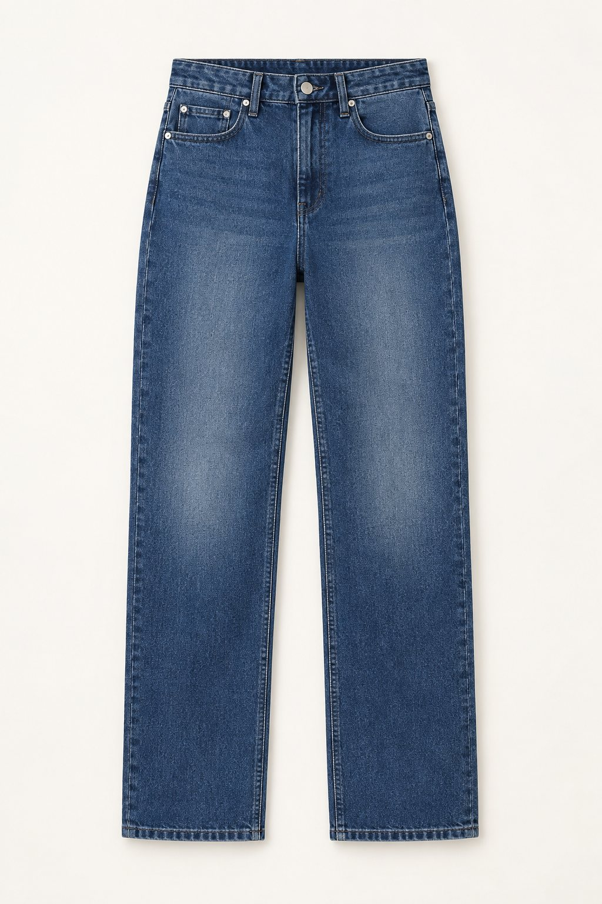

AI Commerce · Creative Director
ShopMindAI WELCOME
Local-first · Evidence-first
Mind your commerce. Power your creativity.
让好商品，被更多人喜欢。
Outputs 产出示例




Why ShopMind
不拍脑袋， 让每一句都有出处。
01
证据可溯源
每个结论都绑定 evidence 与 asset，点开能看到原文与来源定位。
02
六渠道成稿
抖音、快手、小红书、淘宝详情、视频脚本、视觉提示词，事实一致。
03
本地优先
资料、索引、历史与导出包都留在本地 workspace，未配 Key 也能跑完。
Creative Pipeline
五步，把资料变成
可交付的内容包。
每一步都有固定产物，随时可以停下检查 AI 的理解，而不是等最后才发现方向错了。